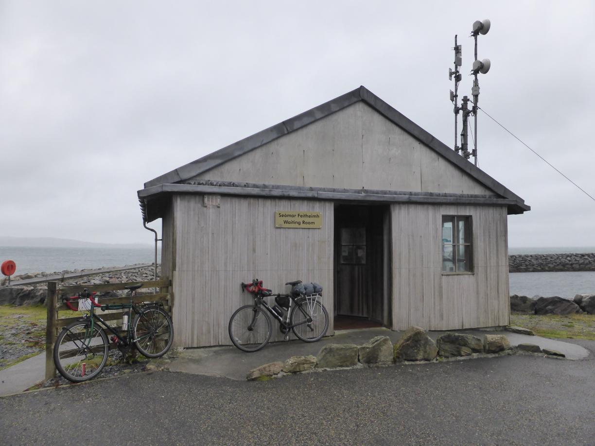

Wind und Fährterminals Posted on September 5, 2017
Tag 33
Scadabhagh - Tigharry 65 km
Vom Campingplatz waren es noch gut 30 Kilometer bis zu Fähre nach Berneray. Ich hatte gut Zeit eingeplant, und konnte so unterwegs noch ein wenig die Seerobben beobachten. In Leverburgh hatte ich sogar noch genug Zeit meinen Proviant aufzustocken. Beim Supermarkt traf ich auf Sean, der ebenfalls die Fähre nehmen wollte. Er war bereits bis Lewis geradelt und gerade auf dem Rückweg. Nach der Fähre trennten sich unsere Wege wieder, da ich noch ein wenig weiter fahren wollte und er zu einem Hosten auf Berneray wollte. Im Westen von North Uist fand ich dann einen Campingplatz.
Tag 34
Tigharry - Kilbride 78 km
Bereits in der Nacht hatte der Wind beständig zugenommen, sodass ich meine Tag mit starkem Gegenwind begann. Dieser wurde gegen Nachmittag immer stärker und ich wahr heilfroh, als ich am Campingplatz in South Uist ankam.
Tag 35
Kilbride - Eriskay 7 km
Vom Campingplatz aus konnte man bereits den Fähranleger auf Eriskay sehen. Der Wind war noch immer sehr stark und es hatte zu regnen begonnen. Ich schaffte es aber dennoch rechtzeitig zum Fähranleger. Nur von der Fähre war keine Spur. Ich wartete zusammen mit ein paar Backpackern im Wartesaal am Fähranlegern. Diese hatten die Nacht dort verbracht, weil ihre Zelte dem Wind nicht standhalten konnten. Gegen Mittag wurde klar, dass es auf Grund des starken Windes auch keine weiteren Fähren geben würde.  Die Backpackergruppe hatte sich bereits aufgemacht eine andere Bleibe zu finden, als Sean am Fähranleger ankam. Wir wollten beide nicht zurück in den Regen und beschlossen deshalb bis zum Morgen im Wartesaal zu bleiben. Dieser verfügte über alles, was wir brauchten. Es gab Toiletten, Dusche, Strom und Wifi und zudem war es angenehm warm und wir waren im trockenen. Ein paar Reisende, die sich nach der Fähre erkundigten ließen uns sogar eine Flasche Wein da. Gegen Abend kamen noch Valentin und seine Familie im Wohnmobil. Nachdem die Kinder schlafen gegangen waren leistete er uns noch Gesellschaft im Warteraum.
Tag 36
Eriskay - Borve 39 km
Nach einer wenig erholsamen Nacht im Wartesaal (das Licht brannte leider die ganze Nacht) waren wir alle auf der ersten Fähre nach Barra. Dort trafen wir noch auf Tim, den ich auf dem Weg nach Kilbride mehrmals unterwegs getroffen hatte.
Sean, der Puppenspieler, improvisierte ein wenig für Valentins Nachwuchs und wir schauten alle gebannt zu.
Auf Barra angekommen wollten Sean und Ich erst nach Castlebay umd dort einzukaufen und anschließend zum Campingplatz auf der Westseite, wo auch Tim hin unterwegs war.
Wir kamen in einen sehr heftigen Regenfall, sodass wir in Castlebay bereits ganz durchnässt waren. Nach einem warmen Frühstück und einem Besuch im Supermark lockerte sich die Wolkendecke. Und bevor wir am Campingplatz ankamen war der Himmel wieder stahlend blau. Am Campingplatz ließen wir unsere Sachen von der Sonne trockenen. Am Nachmittag unternahmen wir sogar noch einen Ausflug nach Vatersay, an den südlichsten Punkt der äußeren Hebriden, den wir über die Straße erreichen konnten. Am Strand lief uns ein Hund zu, mit dem wir ein wenig spielten, bis wir wieder zum Campingplatz zurück fuhren.